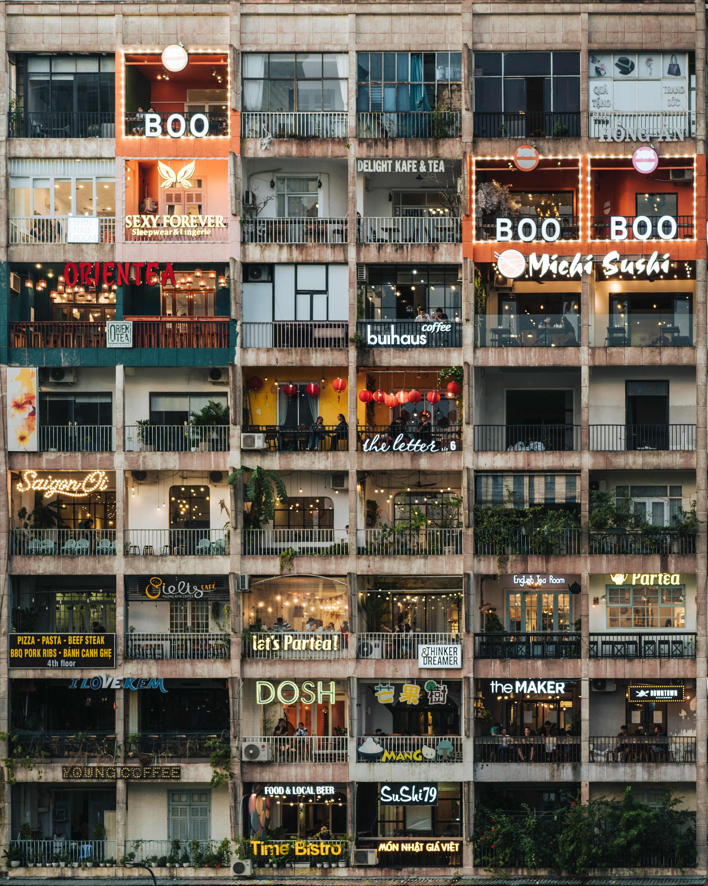
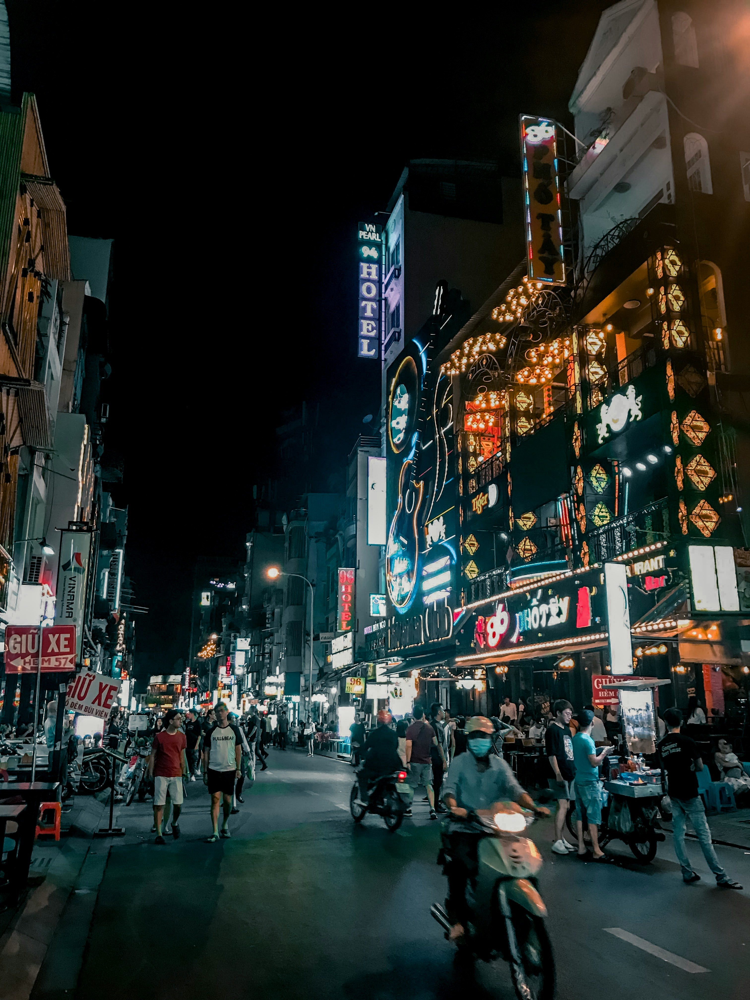

About Ho Chi Minh City
Welcome to Ho Chi Minh City, where the pulse of Vietnam beats strongest and the charm of the past blends seamlessly with the energy of the present. Nestled in the vibrant heart of Southeast Asia, this bustling metropolis captivates visitors with its captivating blend of history, culture, and modernity.
As you navigate the bustling streets, you'll be enveloped in a sensory symphony of sights, sounds, and aromas. But beyond its architectural wonders and bustling markets lies the true essence of Ho Chi Minh City, its warm and welcoming people. Known for their hospitality and infectious smiles, the locals will make you feel right at home as you explore the city's hidden gems and savor its culinary delights.
From the tranquil beauty of its parks and rivers to the vibrant energy of its nightlife scene, Ho Chi Minh City offers something for every traveler. Whether you're wandering through historic neighborhoods steeped in tradition or immersing yourself in the dynamic rhythms of modern life, you'll find that Ho Chi Minh City is a place where the past and present converge, creating an unforgettable experience that will stay with you long after you've left its bustling streets. Welcome to Ho Chi Minh City, where every moment is an adventure waiting to unfold.
Location
Ho Chi Minh City, formerly known as Saigon, is located in southern Vietnam along the Saigon River. The cityscape is a captivating blend of modern skyscrapers and historic French colonial buildings, showcasing the dynamic growth and rich heritage of the metropolis. From the iconic Bitexco Financial Tower piercing the skyline to the elegant Notre-Dame Cathedral and the historic Saigon Central Post Office, Ho Chi Minh City's architecture is a testament to its vibrant past and promising future.

Ho Chi Minh City is a bustling hub of commerce and culture, with its streets lined with vibrant markets and charming boutiques. Visitors can explore the city's local shops, where artisans showcase their craftsmanship and creativity. From bustling markets like Ben Thanh Market, offering a myriad of goods from traditional handicrafts to fresh produce, to trendy boutiques tucked away in hidden alleyways, there's something for every shopper to discover in Ho Chi Minh City.
As a cosmopolitan city with a diverse population, Ho Chi Minh City boasts a thriving international community that has left its mark on the city's culinary landscape. One of the highlights for tourists is exploring the international street, where a tantalizing array of cuisines from around the world awaits. From authentic Italian trattorias to bustling Japanese izakayas and chic French bistros, visitors can embark on a culinary journey without leaving the city. Whether it's savoring a steaming bowl of pho or indulging in gourmet sushi, the international street in Ho Chi Minh City offers a taste of global flavors in a vibrant urban setting.
